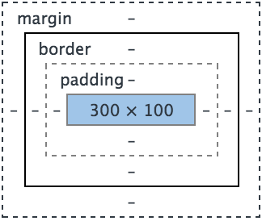
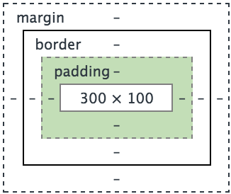
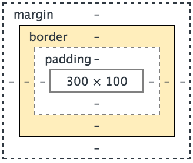
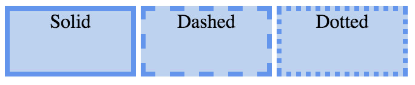
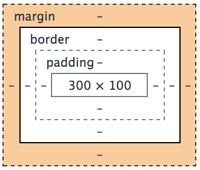

When you have a piece of content on a website, it has four elements to it (I know, I only listed three up there, bear with me). They are the content itself, the padding, the border, and the margin. To better understand these, I am not only going to show you what they look like in the theoretical framework of a site, I'm going to help you think of them in terms of a package you just got in the mail.
The content is...your content. It could be a picture, it could be a paragraph of text, it could be a navigation bar, it could be a header with your page name in it. Where it gets crazy is that this is not strictly speaking, necessary. It is not only possible, but sometimes useful and even necessary, to have a completely empty box devoid of any content whatsoever. This box could be purely decorative (I'm willing to bet a lot of money that you've seen pages that have columns that match this description), or they could have structural value, displacing other elements to push them over to where the page designer wanted them to be. But I'm getting away from myself. The point is that in my metaphor, the content is what you ordered. It is the item(s) that you can't wait to get to.
The padding on a piece of content surrounds the content and goes beyond it. If your content has a background color, it is maintained throughout the padding. The amount of padding you have will determine the size of your border, I know it seems like I'm getting ahead of myself again, but these two are very closely related. If you have no padding, the dimensions of your border will match the dimensions of your content. If you do have padding, the dimensions of your border will match the dimensions of your padding. In our package metaphor, the padding is parallel to the packing materials, especially molded styrofoam packing corners. These establish the amount of space around your content/item. The interesting way that they differ is that in padding on a site, you do not have to have equal padding on all sides, or even any on all sides. It is perfectly acceptable and viable to have padding on anywhere from 0-4 sides, whatever is necessary and useful for your page.
On a site, border is exactly what it sounds like. It usually takes the form of a line of some sort surrounding your content, but it can be dashed or dotted as well.  You can also vary the thickness of your border. Moving back to our package metaphor, the border is equivalent to the box, or shipping container. Just as you can have a border of varying thickness, so can you have a shipping container of varying thickness and strength, be it a cardboard box, or a wooden crate, or even a metal carton. Similarly to your alternatives to solid borders, you can also have shipping containers of varying levels of solidity. You might have a box with air holes in it for example, if what you're shipping needs air. You might even try to send something in a wireframe box. (Disclaimer: The post office may not allow this, and I'm not actually sure why you'd want to do this, but it's theoretically possible. If you try this and get in trouble, it's not my fault.)
When a piece of content has a margin, the margin exists purely to put space between that element of content and other elements on the page. It is invisible to the user on the page itself, and the only value it serves is positional. It serves aesthetic purpose only in that it can help arrange elements on the page to an aesthetic end. In our package metaphor, the margin is equivalent to the invisible forcefields that will eventually be invented to be the next level of protection for fragile packages. Just you wait, it's coming! It's the future!
Speaking of the future, I'll see you next week! (I know, I said that two weeks ago, but I mean it this time!)